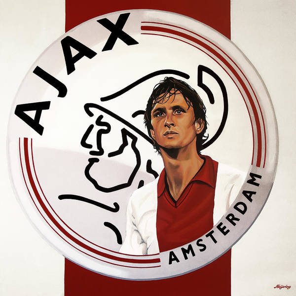
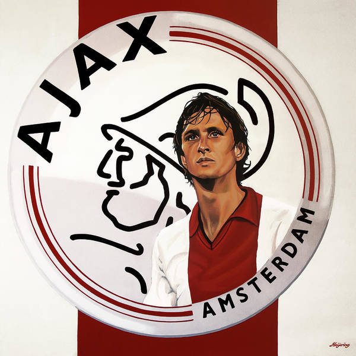

Assignment 2 by Jhon Morales Carmona.
The Following Are Two Types of links (a Relative and an Absolute link):
The Following Two lists (Order and Unordered List):
These are the Best Football Leagues in Europe:
- The Premier League(Englad)
- La Liga (Spain)
- Bundesliga (Germany)
- Serie A (Italy)
- Ligue 1 (France)
These are Some of my Favorite Anime
- Yuyu Hakusho
- Dragon Ball Z
- Monster
- Spy x Family
- Hunter x Hunter
Check Out These Posters From My Favorite Teams:
 

This is Why the 1990's was the Best Era of Anime
Japanese animation has been around for almost a century. Which beggs the question: Why would this. Econ Major who can't draw fingers, would say that animation from 1990s is better than the likes of "Attack on Titan" and "Jujutsu Kaisen" today. Well, there is more than just millenial nostalgia behind this take. I promise! First, From an art point of view, 1990s anime offer a great diversity in the type of art style being used. The choice of colors and backgrounds also variated greatly: you had cyberpunk settings such as in "Ghost in the shell," 90s Japanand aesthethics and fashion in the form of Yuyu Hakushow, and 1990s basketball and hip hop influence with Slam Dunk. During the late 80s and the begining ofthe 90s, independent studios had investment flowing left, right, and center; this would translate on greater resources, and creative freedom to make high quality content with less coporate oversight. This allow artist to explore their creativity, while writers could take greater risk in their story telling. The end result was, what I would argue is the gold age of anime.
Therefore, the question is: What happened to Japanese anime? Well, the answer lies on a series of factors. First, the finantial crisis of the 1990s lead to increase fiscal responsability on the part of Japanese companies, including anime studios. There was also the increased quality of Western animation, which was contraste withe the slow adoption of new technologies in Japan, such as 3-D animation; leading higher cost of production than their competion. Addtionally, one has to mention the mentality of many Japanese companies, where the entire world market is ofen ignored. While anime was incredibly poplular in the late 90s, and early 2000s in Europe and Latin America; Japanese studios ignored the entire foreign market and lost billions of dollars in potential revenue, that could have help Japanese animation studios stay afloat and even venture early into 3-D animation. Eventually, many studios went bankrupt, and strict fiscal responsability took over. Which resulted in studios becoming more risk adverse. Eventhough today the anime and manga represent worth over 20 billion USD, you just have to wonder, what would have happened had Japanese animation companies gambled in the 90s and decided to go internal.
- This opinion piece, was actually written by me Jhon Morales Carmona. Hope you enjoyed it :).Hey, there please check out my use of the box model!